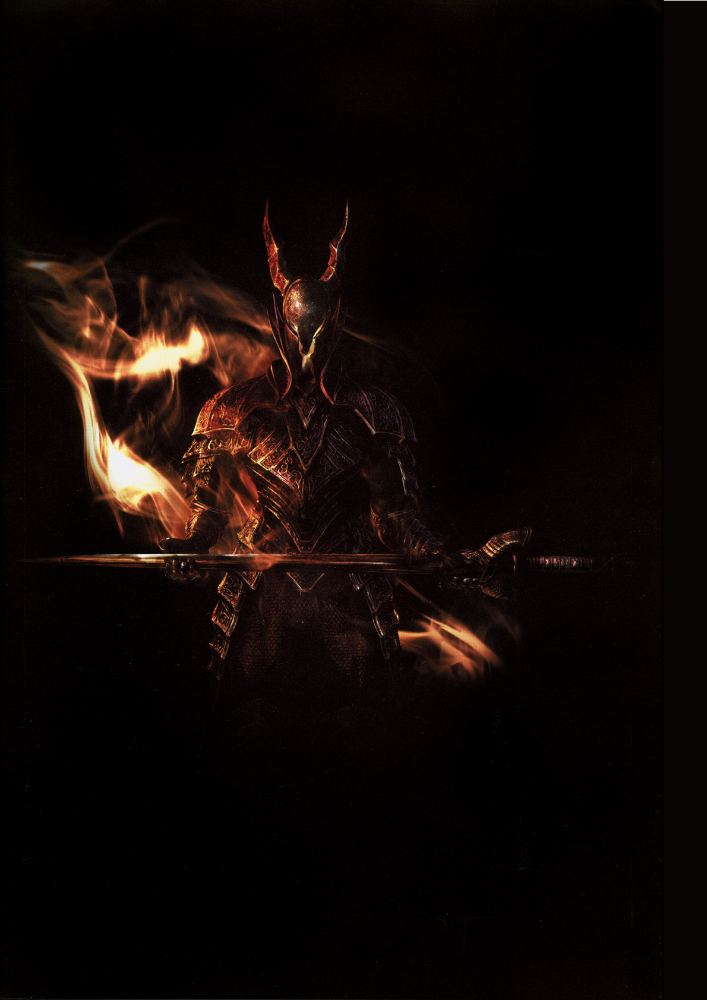
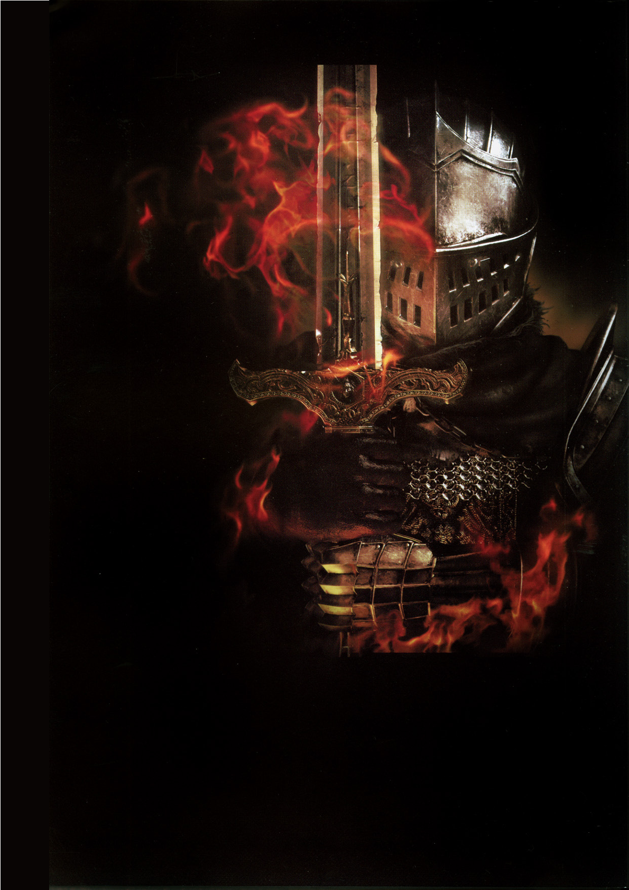

Dark Souls é um jogo eletrônico desenvolvido pela From Software. O jogo foi lançado inicialmente em 2011 para PlayStation 3 e Xbox 360 pela Namco Bandai Games.
Posteriormente, foi relançado para PC em 2012 e remasterizado em 2018, sendo lançado para PC, consoles da nova geração e Nintendo Switch.
O jogo foi desenvolvido anteriormente sob o codinome Project Dark e é o sucessor espiritual de Demon's Souls.
Dark Souls se passa primariamente no reino fictício de Lordran, onde os jogadores assumem o papel de um personagem denominado "Chosen Undead" que, segundo lendas, seria responsável pela quebra de uma maldição que torna incapazes de morrer aqueles que são afligidos por uma misteriosa marca negra, os humanos.
Sim, Dark Souls é um jogo difícil. Ele exige paciência, observação e aprendizado com o erro. No entanto, a ideia de que ele é o ápice da dificuldade na história dos games é mais uma questão de marketing e timing do que de realidade.
Jogos punitivos não são novidade. Nas décadas de 80 e 90, os fliperamas eram projetados para serem "injustos", como Contra, Metal Slug, Ghosts 'n Goblins e Battletoads.
Dark Souls é considerado justo por grande parte da comunidade. O jogo não é difícil por ser aleatório, mas sim por punir a falta de atenção. Uma vez que você aprende os padrões, a dificuldade desaparece.
E não se atreva a se tornar vazio.
O gênero soulslike nasceu com Demon's Souls (2009) e Dark Souls (2011). Ele se baseia em quatro pilares:
Os inimigos são letais, e a morte é parte do aprendizado.
Ao morrer, você perde sua moeda e só tem uma chance de recuperá-la.
Exige paciência, observação dos inimigos e controle da stamina.
O mundo é interconectado e você desbloqueia atalhos até as fogueiras.